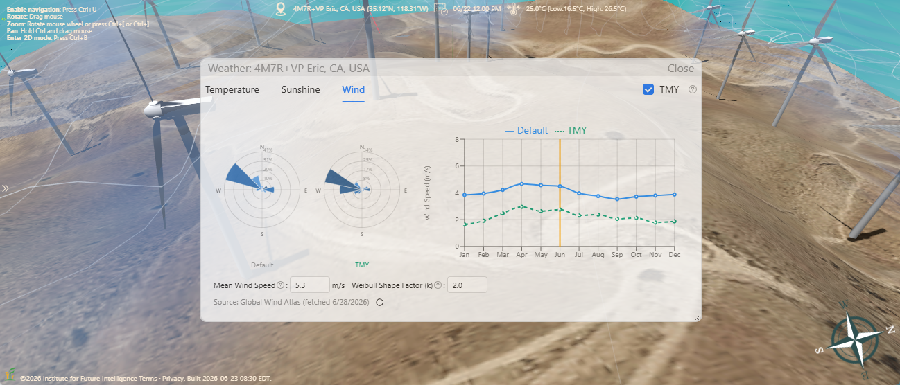
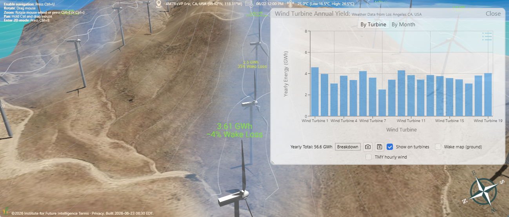

Putting Wind Turbines on Hills
Modeling a ridge-top wind farm in Aladdin on real terrain elevation and measured wind data to see why hills are some of the best places to harvest the wind.
If you have ever driven through a mountain pass and seen rows of wind turbines marching along the ridgelines, you have witnessed one of the oldest tricks in renewable energy: hills make wind. Terrain squeezes and lifts the air flowing over it, so the wind near the top of a hill is faster — and steadier — than the wind down in the valley. Because the power available in the wind grows with the cube of its speed, even a modest gain in wind speed translates into a large gain in electricity. Our Aladdin CAD software, which incorporates Google Maps and real elevation data to provide an "engineering canvas" for drawing real-world projects, lets anyone lay out a wind farm on actual terrain and estimate how much energy it would generate. In this article, we will show you this capability by modeling a cluster of turbines on the hills of the Tehachapi Pass in California.
Why hills make good wind farms
When a moving body of air meets a hill, it cannot stop — it has to speed up to get over the obstacle. This "terrain speed-up" effect can raise the wind speed near the summit well above the speed of the undisturbed flow upwind. At the same time, climbing higher lifts the rotor out of the rough, slow, turbulent air that drags near the ground and into the smoother, faster air aloft. The two effects work together, which is why ridgelines, mesas, and mountain passes are some of the most productive onshore wind sites in the world. The Tehachapi Pass Wind Farm in Kern County, California — one of the first large-scale wind developments in the United States — exists for exactly this reason: the pass funnels strong, reliable winds between the Sierra Nevada and the Mojave Desert.
The flip side is that hilly terrain is unforgiving to design by intuition alone. A turbine placed a little too low on a slope, or tucked into the wind shadow of the hill in front of it, can underperform a neighbor only a few hundred meters away. To site turbines well, you need to see the land in three dimensions and place each machine where the wind actually is. That is what a 3D modeling tool is for.
Building the terrain in Aladdin
Aladdin pulls a real digital elevation model (DEM) for the chosen location, so the ground under your design is the actual ground. For this example we centered the site on the hills near Tehachapi (about 35.12°N, 118.31°W) and let Aladdin drape a one-kilometer-square parcel of satellite imagery over the imported elevation grid. The relief across the parcel spans roughly 300 meters from the valley floors to the hilltops, giving us a faithful set of ridges to work with rather than a flat, idealized plane.

On this terrain we placed nineteen horizontal-axis wind turbines and aligned them along the crest of a ridge using a reference line, so the spacing follows the high ground instead of a straight grid. Each turbine is a 1.5-megawatt machine with a 77-meter rotor (38.5-meter blades) on an 80-meter tower, for a tip height of about 118 meters — a typical utility-scale configuration. Nineteen of them give the site a nameplate capacity of roughly 28.5 megawatts. Every turbine can be selected and edited individually, so its hub height, rotor size, rated power, and power-curve parameters are all yours to change.
Estimating the wind resource
Knowing the layout is only half the problem; you also need to know the wind. Aladdin draws on wind-climate data from the Global Wind Atlas to characterize how often the wind blows, how hard, and from which direction at the chosen site. The wind speed is described by a Weibull distribution — here with a mean of about 4.5 meters per second and a shape factor near 2.2 at the reference height — and the direction is summarized as a wind rose split into twelve sectors. At this location the prevailing winds come from the south and south-southwest, exactly the kind of dominant direction you want to align a ridgeline against.

The resource is not constant through the year. The monthly mean wind speeds at this site peak in the spring — near 5.8 meters per second in April — and dip in late summer to around 4.2 meters per second. Capturing this seasonality matters, because a wind farm's value depends not just on its annual total but on whether it produces when the grid needs it.
Simulating the energy output
With the terrain, the layout, and the wind resource in place, Aladdin can estimate how much electricity the farm would produce. Each turbine converts wind to power along a power curve defined by four numbers: it starts generating at a cut-in speed of 3.5 meters per second, ramps up to its full 1.5-megawatt rated output at 12 meters per second, holds that output as the wind strengthens, and shuts down for safety at a cut-out speed of 25 meters per second. Combining the power curve with the Weibull wind distribution sector by sector yields the expected energy for each machine, and summing over all nineteen turbines gives the farm's annual output.

Because the model lives on real terrain, you can experiment the way a real developer would: drag a turbine uphill and watch its expected yield rise, thin out machines that crowd one another, or test a taller tower to reach faster wind. The point is not a single magic number but the ability to compare designs honestly, on the same ground and the same wind data.
Conclusion
Wind energy is shaped by the land it blows over. The same hill that blocks your view can double the power in the air just above it — but only if a turbine is placed where that air actually flows. Aladdin lets anyone design a wind farm on the real shape of the earth, drive it with measured wind data, and examine how it might perform using accurate simulations. As Aladdin works in the browser, users can easily share their projects with stakeholders via social networks. With enough people becoming interested in a project, it may eventually turn into actions that change the world.
← Back to Aladdin